1. 경영컨설팅 테마 전략기술
구분 내용 테마 설융개 . 설계자, 융합자, 개척자전략기술 개슈컨 마도피 선출보지.
(설계자) AI네이티브 개 발플랫폼, A I슈 퍼컴퓨팅 플랫폼, 컨 피덴셜컴퓨팅 (융합자) MA S, 도 메인특화 언어모델, 피 지컬AI (개척자) 선 제적 사이버보안, 디지털 출 처, AI 보 안 플랫폼, 지 리적 이전
📂 하위 토픽 (10) 접기/펼치기 특 핵심 플랫폼구조 기술 도구 +a
AI가 SW개발 전주기를 주도하며 지능적으로 자동화하는 플랫폼.
구분 내용 특 AI중심설계, AI에이전트 협업 핵심 개발자역할변화, Human in the loop 플랫폼구조 (입력) 사용자 자연어, 아이디어 디자인 (코드 프롬프팅) 코드작성, 설명, PL변환, 디버깅/리뷰
(도구) 코딩, UI/UX, 생산성, 협업 (AI모델) LLM, Agent (출력) 코드, 서비스 결과 기술 (AI) LLM, 도메인특화모델 (개발) 코드어시스턴트, 테스트자동화 (운영) DevOps, CI/CD
(데이터) DataLake/LakeHouse, 지식그래프, 벡터DB (확장기술) 에이전트 F/W 도구 (클라우드기반) Google Vertex AI, MS Azure (AI코딩) Github Copilot (AI에이전트개발) MindStudio (AI앱) Natively +a AI네이티브 개발 플랫폼 활성화 방안 → PoC중심 단계적 확산, AI활용교육 강화, AI거버넌스 수립, DevOps/MLOps
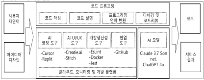
📂 하위 토픽 (1) 접기/펼치기 특 기술
설계 단계부터 AI 가 중심 역할을 하도록 기획된 플랫폼/서비스 환경.
구분 내용 특 Human in the loop, 데이터중심 아키텍처, AI-First 설계 기술 (커뮤니케이션) 목표지향, MCP, A2A, Prompt I/F (인프라) 모델 서빙, 벡터DB, AI가속기 (프로세스) LLM운영체계, HITL, 관측성 (거버넌스) XAI, 데이터 계보, 응답/감사 로그, 보안 권한
특징 기술요소
AI 가속기 중심으로 인프라 통합, 초대규모 AI학습/추론을 안정적으로 수행하는 고밀도 컴퓨팅 인프라
구분 내용 특징 하이브리드 컴퓨팅, HBM → HBF 진화 기술요소 (AI가속기) GPU, TPU , AI ASIC (고대역 메모리) HBM , HBF (인터커넥트) CXL, NVLink, infiniband (스토리지) NVMe (오케스트레이션) k8s, Slurm (전력관리) PDU, HVDC
특 기술 +a +a +a
신뢰실행환경(TEE) 기반으로 사용중 상태의 데이터까지 보호하는 컴퓨팅
구분 내용 특 데이터 사용중 암호화 유지, TEE기반 보안, 개인정보보호, AI신뢰 확보 기술 (신뢰실행환경) TEE (실행증명 ) 검증자/증명자 (주변장치) GPU, NIC, FPGA 통제
(시스템SW) ECALL / OCALL (응용레벨 보안) 완전동형암호, SMPC, 차분 Privacy, 합성데이터 +a (AI 적용방안) 민감데이터 TEE 내부학습, 추론과정을 보호영역에서 처리, 모델 외부접근 차단, RAG 안전영역 처리, 데이터 결합 노출방지, 처리결과 감사/로그 +a (클라우드 적용방안) 멀티테넌트 격리, 관리자 접근차단, 원격검증, 키관리 연계(검증된 워크로드에서만 키 제공), 접근통제 강화, 규제준수(개보법, 데이터주권, 클라우드보안 인증요구) +a (고려사항) 성능검증, 보안검증, 적용범위 결정, 운영관리, 표준화, 책임관리
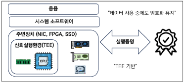
MAS (Milti Agent System) 교재 p.10
암기: 상호작용 특 구성요소 기술요소 한계점 충돌해결 매커니즘 성능평가 지표 +a +a
여러 독립적/자율적 에이전트 간 상호작용 , 전체 목표 달성 하는 패러다임
구분 내용 특 자율, 협력, 분산, 적응, 지능성 구성요소 에이전트, 환경, 협력조정, 통신, 동적 라우팅 기술요소 (통신) FIPA ACL, KQML (의사결정) MARL , 메시징, LLM (지식기반 추론) Vector DB, 지식그래프, RAG
(환경) NetLogo, Mesa, GAMA, JADE (플랫폼) LangGraph, AutoGEN, Swarm 한계점 에이전트 충돌 (협력실패, 교착) 확장성(비용, 성능) 학습 불안정성 (정책수렴 실패)
전역정보 부족(최적해 탐색실패) 강건성/신뢰성(장애전파)충돌해결 매커니즘 경로계획 (사전계산) 우선순위 (에이전트 우선순위) 시간분리 (예약) 분산회피 (속도/방향계산)
예측기반(위치예측) 중앙집중 스케줄링, 강화학습기반, 규칙기반 회피성능평가 지표 (효율성) 처리량, 평균완료시간, 자원이용률 (통신) 오버헤드, 복잡도, 협력이득
(강건성/신뢰성) 결함허용도, 충돌횟수, 복구시간 (확장성) 연산복잡도, 확장효율 (적응성) 학습속도
+a 멀티에이전트 시스템 최적화방안 → (알고리즘) 계층적학습, 병렬연산, 경량화 (통신) 이벤트기반, 로컬공유, 데이터압축 (경로) 동적경로계획, 시장기반할당, 예측기반제어 +a 기술적 과제 → (에이전트 무한루프) 워크플로우설계, HITL (비용/지연시간) SLM역할분담, Caching (상호운용성) MCP, A2A 표준 프로토콜 규격화
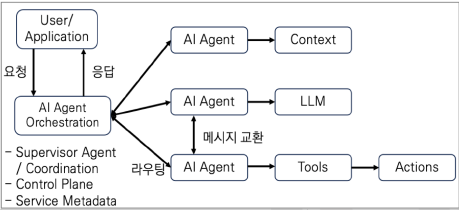
📂 하위 토픽 (2) 접기/펼치기 특 구성 기술
여러 AI Agent 가 역할과 목표를 가지고 협업을 수행하는 멀티에이전트 오케스트레이션 F/W.
구분 내용 특 역할 기반 협업, 확장성, 자율적 작업분담구성 에이전트, 태스크, 크루 , 프로세스 기술 LLM, Agent Framework, Tool Integration, Orchestration Engine,
+ MAS 의 기술요소(FIPA ACL, KQML, Agent Discovery/Card, Message, Part, Artifact)
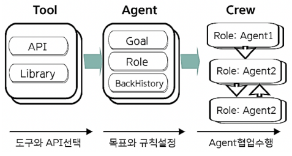
MARL (Multi-Agent Reinforcement Learning) 교재 p.14
구성 대표알고리즘 환경 종류
다수의 에이전트가 하나의 환경 에서 상호작용하며 동시 학습 하는 강화학습.
구분 내용 구성 에이전트, 공유환경, 보상함수, 통신프로토콜 대표알고리즘 MADDPG (정책/비정책 분리), MAPPO (다중에이전트 PPO), QMIX (중앙집중&분산실행), COMA (정책기여도 기반 ActorCritic)환경 종류 Cooperative MARL (협력, 공동목표 달성), Competitive MARL (에이전트 간 이익 극대화)
도메인 특화 언어 모델 (DSLM, Domain-Specific Language Model) 교재 p.16
기술요소 현황
특정 산업의 데이터로 학습하여 해당 도메인의 전문적 언어처리능력을 제공하는 모델.
구분 내용 기술요소 (데이터) 도메인전용 데이터셋, 도메인데이터 정제/라벨링 (학습) 파인튜닝, From Scratch학습
(지식관리) RAG, 벡터DB, 지식그래프 (최적화) Prompt Engineering, 인컨텍스트 러닝
(추론 제어/안전) 룰 기반 제어, 도메인 안전 가드레일 , 도메인 특화 평가지표
현황 AI특화 파운데이션 모델, Vertical AI
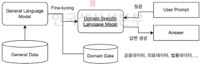
물리 AI (Physical AI, 피지컬 AI) 교재 p.17
특 아키텍처 스택 유형 기술 보안위협 보안대책 도입 전략 현황
물리적 환경에서 직접 동작, 시뮬레이션하며 제어하는 AI.
구분 내용 특 물리환경 학습 , 자율적 판단아키텍처 스택 Perception Layer(CV, Sensor) → Reasoning Layer(VLM) → World Model
→ Planning Layer(RL, MPC) → Action Layer(VLA) → Robot Control 유형 휴머노이드형, 자율주행차형, 드론형, AGV/AMR형 기술 (센싱) 컴퓨터비전, 센서퓨전, 디지털트윈 (AI/ML) 강화학습, 진화연산, LAM, LWM
(로보틱스) 예측제어, 액추에이터, SLAM (분산처리) MEC, 클라우드 (에너지) 하베스팅, 전원관리 보안위협 AI백도어 삽입, 과다연산 유도, 회피 공격, 센서정보 전처리과정 공격, 물리적 안전 위협 보안대책 (데이터) 데이터검사, 모의공격, 적대적학습 (권한) 최소권한, HW물리적 보호
(시스템안전) 안전모드, 비상대응모드
(입력/통신) 센서 입력범위, 암호화 (모니터링) 로깅/모니터링 도입 전략 (데이터) 센서 데이터 표준화, 데이터 파이프라인, DQ관리, 디지털트윈 연계, 지속적 학습체계
(인프라) Edge Cloud 하이브리드, 고성능 연산자원, 저지연 통신, MLOps
(거버넌스) 안전성 기준, 책임구조, AI 관리체계, 변경/형상통제, 실시간 모니터링 현황 경기도 피지컬 AI랩 가동 → 중소 제조기업 AI 전환 지원. (데이터수집, AI검증) → 향후 AI클러스터 거점 연계, 분야확대
현황 정부, 물리 AI 기술 확보 위한 연구개발 투자 추진 → 선도기술 개발, 자율행동체 온디바이스 AI, 가상융합, 지역AX기반 산업 적용 → 제조 산업 중심 적용까지 포함한 생태계 구축 목표.
현황 2026년 3월, 과기정통부/KISA, 미래산업 현장 보안내재화 위한 "선박/우주/로봇산업 분야 특화 보안 매뉴얼" 배포
+a Physical AI 에서 월드모델은 환경 시뮬레이션 계층으로 핵심적인 역할 수행.
📂 하위 토픽 (1) 접기/펼치기 선제적 사이버 보안 (Proactive Cybersecurity) 교재 p.21
기술요소
사전예방 중심 보안 접근방식
구분 내용 기술요소 공격표면관리 , 위협인텔리전스AI, 행동모니터링(UEBA ) 이상탐지(행위, 비지도학습기반, 시계열기반) AI SecOps(SOAR, SIEM)
디지털 출처 (Digital Provenance) 교재 p.22
기술요소
데이터/AI/SW 자산의 전 생애주기 변경이력을 추적하여 진위/무결성을 확인하는 신뢰 체계.
구분 내용 기술요소 SBOM , C2PA기반 워터마킹 , 이력DB, 불변원장 , 공급망보안, AI신뢰성 검증, 정책&컴플라이언스
기술요소
AI모델 및 인프라,SW 전 생명주기에 걸쳐 보안위협 식별 및 자동화된 대응을 확보하는 통합보안체계.
구분 내용 기술요소 프롬프트 필터링, LLM방화벽, DLP, 모델 행위모니터링, LLM 정책관리엔진
지리적 이전 (Geopatriation) 교재 p.25
기술요소
데이터, AI모델, 인프라, SW 자산 등을 특정 지리적 경계 내로 이전하여 데이터 주권을 확보하는 전략적 운영방식.
구분 내용 기술요소 지역 클라우드, 엣지 클라우드, 소버린 클라우드 , 규제준수 엔진, 데이터 거버넌스
📂 하위 토픽 (2) 접기/펼치기 디지털 면역 시스템 (Digital Immune System) 교재 p.28
특 6가지 요소
시스템에 대한 사이버 위협으로부터 보호하도록 설계된 SW 및 시스템.
구분 내용 특 AI접목, 운영효율화, 복원력, 장애결함대비 6가지 요소 관증카복신공 . 관 찰가능성, AI증 강 테스트, 카 오스 엔지니어링, 자동 복 구, 시스템 신 뢰성 엔지니어링, App 공 급망 보안
특 기술요소
다양한 서비스를 하나의 플랫폼 안에서 제공하는 모바일 App.
구분 내용 특 Lock-in 효과 , 생태계 확장성기술요소 다중서비스 제공, 개인화, 심리스UX, 타사 서비스 통합, 결제 통합, 소셜 기능, 인앱 광고, 보안/프라이버시
가트너 2025 10대 전략 기술 트랜드 교재 p.33
암기: 기부환계생 축 수명주기모델 5단계 2025 정점 기술
신기술의 성숙도를 5단계의 사이클로 시각화한 모델
구분 내용 축 가로(시간) 세로(기대치) 수명주기모델 하이프사이클, 매직쿼드런트, 임팩트레이다 5단계 기부환계생 . 기술촉발, 부풀려진 기대의 정점, 환멸, 계몽, 생산성안정2025 정점 기술 기계고객(AP2), AI에이전트, 인텔리전스 의사결정, 프로그래머블 머니
가트너 하이프 사이클(Hype Cycle) 교재 p.35
2025 AI 정점기술 2025 AI 환멸기술 계몽
구분 내용 2025 AI 정점기술 AI에이전트, AI 레디 데이터, 멀티모달 AI, AI TRiSM 2025 AI 환멸기술 ModelOps, Foundation Model, Edge AI, Generative AI 계몽 지식증류, 지식그래프,클라우드AI
📂 하위 토픽 (2) 접기/펼치기 특 6원칙 7성과 도메인
프로젝트 관리에 있어 실무, 운영 중심 의 구조를 제공하는 프레임워크.
구분 내용 특 실무 운영 중심, 전통/Agile/하이브리드 통합 적용 6원칙 전체적 관점 채택, 가치 중심, 품질 내재화, 책임감 있는 리더십, 지속 가능성 통합, 권한있는 문화 구축 7성과 도메인 거범일재이자위. 거버넌스, 범위, 일정, 재무, 이해관계자, 자원, 위험 → 착계실통종 40개 프로세스.
📂 하위 토픽 (3) 접기/펼치기 CDP (Customer Data Platform) 교재 p.46
특 기술
다양한 채널의 고객 데이터를 하나의 플랫폼에 통합하여, 실시간분석 및 개인화 마케팅 에 활용하는 관리시스템
구분 내용 특 360도 고객 뷰 제공 , 실시간 데이터 수집 및 통합, DMP(익명데이터) → CDP(통합/분석) → CRM(실행, 관리) 기술 (데이터수집) SDK, API, ETL (데이터통합) 매핑, AI기반 정제, MDM , SCV 제공 (프로파일링) 행동 세그멘테이션 , RFM 분석, 군집 분석
(인사이트 도출) A/B 테스트, 코호트 분석, 시각화 (개인화) 추천엔진, 마케팅 자동화, 다채널 활성화, 컨텐츠 최적화
(보안) 접근제어, 데이터 마스킹, 암호화 기술, 프라이버시 (AI) NLP, LTV 분석, 의사결정 엔진
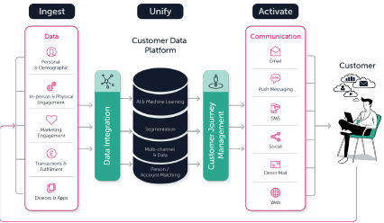
DMP (DATA Management Platform) 교재 p.48
특
온라인상의 다양한 비식별 데이터를 수집, 통합, 분류하여 타겟팅 광고에 활용하는 데이터 관리 플랫폼
구분 내용 특 비식별 정보(3rd Party) 활용, 행동데이터 확보, DMP(익명데이터) → CDP(통합/분석) → CRM(실행, 관리)
자율제조 3.0 전략 - 「AI 기반 스마트제조혁신 3.0 전략」 교재 p.49
FAST (Free Ad-supported Streaming TV) 교재 p.51
Ansoff Matrix (안소프 매트릭스) 교재 p.53
축 전략유형
제품과 시장 두 가지 요소를 기준으로 네 가지 기업 성장 전략을 제시한 모형.
구분 내용 축 세로(시장 - 기존시장, 신규시장) 가로(제품 - 기존제품, 신제품) 전략유형 침제시다 . 1. 시장침 투(기존&기존) 2. 제 품개발(신제품&기존시장) 3. 시 장개발(기존제품&신시장) 4. 다 각화(신제품&신시장)
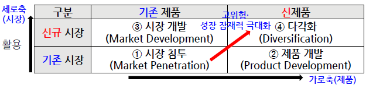
RE100 (Renewable Energy 100) 교재 p.55
CF100 (Carbon-Free 100) 교재 p.57
XBRL (eXtensible Business Reporting Language) 교재 p.60
필요성 개념도 구성 프레임워크 재해복구 기준
재난, 재해로부터 업무복구 등 비즈니스 연속성을 보장하는 체계.
구분 내용 필요성 규제준수, 기업신뢰성, 업무연속성 확보, 데이터 폭증, 복구필요 개념도 (마차그림) BCP전략, 정책 → 인프조. 인프라(DR), 프로세스(BIA, RTO), 조직(모의훈련) → 업무재개, 재해복구 구성 DR, BR, BIA , Backup, Planning프레임워크 재해복구 → 업무복구 → 업무재개 → 비상계획 재해복구 기준 복구목표시간(RTO ), 복구목표시점(RPO ), 네트워크 복구목표(RCO) 업무 복구범위목표(RSO) 백업센터 구축목표(BCO)
DR (Disaster Recovery) 교재 p.64
절차 기술 유형 현황 현황 현황 현황 현황
BCP 수행 위한 평시 확보하여 두는 인적 물적 자원 및 관리체계.
구분 내용 절차 전략수립 → BIA → DRS설계 → DRS구축 → 운영 및 모의훈련 기술 복제(HW, SW적) 동기화(동기,비동기) NW(데이터,서비스) 유형 (형태) 독자구축, 공동구축, 상호구축 (주체) 자체운영, 공동운영, 위탁운영 (복구수준별) Mirror, Hot, Warm, Cold Site 현황 3-2-1 벡업. Multi-Region-Active-Active DR 시스템
현황 국가정보자원관리원 화재 등 정부전산망 장애 따라, 행정서비스 복구구조를 실시간 이중화 방식으로 전면 개편. → Active - Active DR
현황 행안부, 모든 행정시스템 UPS 분리 의무화, 공공전산시설 안전기준 전면 강화
현황 국정자원 대전센터 2030년 폐쇄 → 공주/대구/민간클라우드 재배치
현황 시스템 등급별 DR 체계 강화 및 의무화 → A1 - A4 등급 분류. RTO 명확화 → A1의 경우 실시간-1시간내 복구, Active-Active DR 의무화
현황 2026.3 정부, 공공 클라우드 DR 구축 위해 2000억원 규모 프로젝트 ISP 수립 착수 → 3개 주요시스템 대상 Active-Active DR 실시간 데이터 동기화 구현
클라우드 DR (Disaster Recovery) 교재 p.66
메모리 안전 언어(Memory-Safe Language, MSL) 교재 p.70
암기: 메모리관리( 특 종류 주요기능 현황
메모리 접근 취약점을 언어 차원에서 원천 방지하도록 설계된 P언어.
구분 내용 특 메모리 접근 시 범위검증, 컴파일 타임 오류검출 종류 Rust, Go, Swift, Java, C#, Kotlin 주요기능 메모리관리( GC, ARC ), 소유권모델 (Rust), Null안전성 , 타입안전성 (정적타입검사), 경계검사, 불변성 (Race Condition 방지), 동시성
현황 취약점70%가 메모리 접근오류 출신(CVE) 하트블리드, 배드알록 보안사고, 비 메모리 안전언어 한계 보완 → MS 의 C/C++ 2030년 퇴출예고. Rust 기반 전환
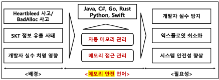
PWA (Progressive Web App) 교재 p.72
특 발전과정 기술
지능형 상호작용, 초연결, 물리-디지털 통합을 지향하는 차세대 웹 환경
구분 내용 특 상황인식, 감정이해, 자율추천, 결정 개입 가능 발전과정 Web 1.0(정적 정보) → 2.0(소셜 웹) → 3.0(분석, 개인화) → 4.0(UX, 선제적 제안) 기술 (상호작용) AI, 자율형 에이전트, 신경 기호적 인공지능, 지식 그래프 (개인화) 상황인식 컴퓨팅, 분산데이터, IoT
(물리세계 통합) 디지털 트윈, 공간컴퓨팅, 고정밀 측위, 확장현실 (초연결) 6G통신, 블록체인, DID
특 작동단계 기술
AI Agent 가 상품탐색, 금액비교, 최종결제, 배송확인까지 자율적으로 수행하는 새로운 상거래 모델
구분 내용 특 의도기반 자동실행, 권한 위임 작동단계 자연어 명령 → 의도해석/탐색 → Catalog API연동 → 보안토큰(SPT)발행 → 결제 및 승인 기술 (AI엔진) LLM의도해석, 자동결정 (데이터) 상품 메타데이터, Catalog API, Inventory API (협업) MAS, A2A, MCP (결제) SPT, AP2 (권한) KYA , 디지털 자격증명
특 기술요소
초대규모 AI모델 학습/추론 위한 AI워크로드 최적화 데이터센터
구분 내용 특 고성능 AI전용 HW, 초저지연 고대역폭 네트워크 기술요소 (HW) GPU, TPU, HBM, HBF, CXL, SOCAMM (전력) 전력배분PDU, HVDC (냉각) 수랭, 액침 (네트워킹) Infiniband, NVLink, NVME-oF
HVAC (Heating Ventilation·Air Conditioning) 교재 p.80
배경 기술요소
난방, 환기, 공기조화를 최적 상태로 유지하는 환경제어 시스템.
구분 내용 배경 AI데이터센터 급증, 탄소증립 의무화, 전력비용 절감 기술요소 (난방) 보일러, 히트펌프 (환기) 기계식 팬, 전열교환 (공기조화) 냉각 사이클
원인 유형 대응방안
AI기술을 과장하거나 허위로 표시/광고하는 행위
구분 내용 원인 AI열풍, 정보비대칭, 투자유치경쟁, 규제공백 유형 허위 표시, 과장 표시, 모호 표시대응방안 (법적규제) 표시광고법, 전자상거래법, AI기본법-투명성 관리체계 (규제기관) AI워싱 실태조사, 인증체계 연계 (예방 가이드라인) 기능표시 기준 (기업) 기능검증, 근거 문서화
오픈 워싱 (Open Washing) 교재 p.83
AI 워크슬롭 (Workslop) 교재 p.84
다크 팩토리 (Dark Factory) 교재 p.85
특 기술요소 현황
AI, IoT 등 최첨단 기술을 이용해 완전 무인화된 암흑공장
구분 내용 특 완전자동화, 24시간 무중단 생산 기술요소 (데이터수집) IoT센서 , RFID, Edge G/W , MQTT (지능형분석) AI/ML, MLOps, AutoML
(실행제어) 로보틱스, 물리AI , AGV/AMR , PLC/MES연동 (통합운영) CPS , 디지털트윈 , SDF
현황 가트너, 설비제어시스템의 CPS복원력 확보 필요성 강조. → CPS 백업 및 복구체계 → 설비 별 펌웨어 버전, 설정값, 제어로직 등 정확한 복원 필요
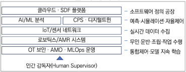
4. 보안 킬린(Qilin, Agenda 랜섬웨어) 교재 p.163
SASE (Secure Access Service Edge) 교재 p.166
특 구성
네트워크와 보안 기능을 클라우드에서 통합 제공하는 아키텍처 모델.
구분 내용 특 위치 무관, 엣지 적용, 제로트러스트 기반, 멀티환경 유연성 구성 (Network Security as a Service) CASB, SWG, FWaaS, ZTNA, VPN (Network as a Service) SD-WAN, CDN
SSE (Secure Service Edge) 교재 p.167
특 구성
SASE에서 보안 기능만 분리하여, 클라우드 보안을 제공하는 아키텍처.
구분 내용 특 SaaS 보호 특화, POP 기반 클라우드보안 구성 ZTNA, CASB, SWG, DLP
CI (Connecting Information) 교재 p.168
특 생성절차 보안 위험성 해결방안
개인식별정보를 일방향 해시 처리하여 생성한 고유 식별 값.
구분 내용 특 불가역성, 표준길이 88byte , 고유성, 연계성 생성절차 입력값 → 해시 적용(HMAC, SHA 등) → CI값 출력(88byte) 보안 위험성 공통 식별자, 악용 시나리오, 유출 해결방안 CI2전환, 유효기간 적용 , 제로트러스트, 거버넌스, 분리보관, 접근제한, 인증 강화
취약점 대응
구분 내용 취약점 보안설계, 에어갭, 공격표면, 노후화, 패치미흡, 공급망, 권한관리 대응 위험평가, 자산 가시성, 보안솔루션, 네트워크보안, 모니터링, 제3자 보안통제
📂 하위 토픽 (4) 접기/펼치기 구성
산업제어시스템 보안
구분 내용 구성 일반, 정책및절차, 시스템, 구성요소
원칙 현황
사회 필수서비스 운영 위협 사이버활동에 대한 보호 위한 원칙
구분 내용 원칙 안전최우선, 비즈니스 지식 중요, OT데이터 보호, OT인프라 격리, 공급망 안전, 사람 필수 현황 KISA, 국내 OT 환경 제로트러스트 적용 안내서 발표 → 실시간성 유지, OT독립성, 전역 침해 가정, 지속모니터링
계층
ISA-99 에서 제정한 PERA기반, IDMZ를 사용한 IT와 OT의 이중 분리구조의 보안참조 모델
구분 내용 계층 (Level 5) 애플리케이션 (Level 4) 비즈니스 (IDMZ) 보안솔루션 연계 (Level 3) 생산운영, 공정 (Level 2) 현장 단위 제어 (Level 1) 기본 제어/제조 (Level 0) 프로세스 장비
CMMC (Cybersecurity Maturity Model Certification) 2.0 교재 p.180
HNDL (Harvest Now, Decrypt Later) 공격 교재 p.182
특 동작과정 대응방안
암호화된 데이터를 수집, 저장 후 양자기술 발전하면 해독하는 공격방식
구분 내용 특 모스카 부등식(X + Y > Z) 원리 , 미래지향적 위협모델동작과정 수집 → 보관 → 대기 → 해독 대응방안 양자내성암호(PQC) , 하이브리드 암호화 아키텍처, 암호 민첩성(Agility) , 키 길이 강화
사이버보안 프레임워크(CSF, Cyber Security Framework) 2.0 교재 p.178
코어 기능 2.0 프로파일 단계
조직 사이버보안 대처/대응전략 수립 위한 NIST 에서 발표한 사이버 보안 프레임워크
구분 내용 코어 기능 Governance (GV), Identify (ID) Protect (PR), Detect (DE), Respond (RS), Recover (RC)2.0 프로파일 단계 조직 프로파일 범위지정 → 프로파일 생성정보 수집 → 조직 프로파일 생성 → 현재-목표 프로파일 격차 분석 → 실행계획 구현 및 프로파일 업데이트
프라이버시 보호 기술 (PET, Privacy Enhancing Technologies) 교재 p.184
난독 암호화 분산분석 데이터책임
개인정보를 수집, 분석, 처리하는 과정에서 프라이버시를 보호하기 위한 기술.
구분 내용 난독 차분Privacy, 합성데이터, 영지식증명 암호화 동형암호, 신원기반, SMPC, TEE 분산분석 연합학습, 분산분석 데이터책임 책임시스템, 개인정보 관리시스템
📂 하위 토픽 (2) 접기/펼치기 영지식 증명 (Zero-Knowledge Proof, ZKP) 교재 p.186
암기: 완건영 특성 메커니즘 유형 알고리즘
증명자가 검증자에게 비밀 정보를 알고있음을 정보공개 없이 증명하는 암호화체계
구분 내용 특성 완건영. 완전성, 건전성, 영지식성 메커니즘 Commitment 알고있다고 전달 → Challenge 요청 → Response 질문 응답 → 반복/검증 유형 대화형, 비대화형
알고리즘 zk-SNARK, zk-STARK, Bullet Proof
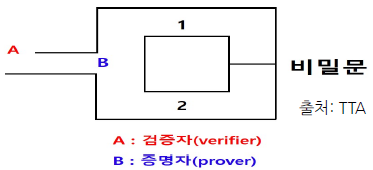
다자간 계산 (Multi-Party Computation, MPC) 교재 p.188
원리 기술
입력값 공개 없이 공동 연산 분산신뢰모델
구분 내용 원리 Secret Sharing, 연산수행, 결과조합 기술 Yao의 개릿서킷 , Secret Sharing , 동형암호 , 소수정밀연산, 블라인드평가
오펜시브 보안 (Offensive Security) 교재 p.190
특 유형
공격자 입장에서 침투 가능 지점을 사전에 찾아내어 방어전략 수립하는 접근방식.
구분 내용 특 실제 상황 시뮬레이션, 예방/회피 보안전략 유형 취약점 진단, 모의 해킹, 퍼플팀 테스트, 레드팀 테스트
OWASP (Open Web Application Security Project) Top 10 2025 교재 p.192
구성
OWASP 에서 선정한 웹 취약점 상위 10게.
구분 내용 구성 접보공암 인불인무로예.
(1)취약한 접 근제어 (2)잘못된 보 안구성 (3) SW공 급망실패 (4)암 호화실패 (5)인 젝션 (6)불 완전한설계 (7)인 증실패 (8)SW무 결성실패 (9)로 깅실패 (10)예 외조건 잘못처리
📂 하위 토픽 (2) 접기/펼치기 EDR (Endpoint Detection and Response) 교재 p.194
암기: 예탐방대 특 기능(가트너)
단말에서 발생하는 이상행위를 탐지하고 대응하는 지능형 보안 솔루션.
구분 내용 특 행위탐지, 단말 격리, 파일/프로세스 추적 기능(가트너) 예탐방대 . 예측, 탐지, 방어, 대응
XDR (eXtended Detection and Response) 교재 p.195
특 기술 현황
다양한 보안 영역의 데이터를 통합 분석하여 위협을 탐지하고 대응하는 확장형 보안플랫폼.
구분 내용 특 전방위 보안데이터 수집, 자동화된 탐지 및 대응, 중앙집중 분석 기술 (데이터통합) EDR, NDR, FW, SIEM (이벤트정규화) 수집기, 저장소 (상관관계분석) 행위분석, 머신러닝 (위협인텔리전스) TIP, IOC매칭 (자동대응) SOAR (시각화) 대시보드, 콘솔UI 현황 서울시, 2027년까지 XDR기반 통합보안관제 플랫폼 구축 목표 → AI보안관제(SEIM + SOAR + AI) + ASM연동 = XDR기반 내외부 통제 데이터 분석. 복합 위협탐지체계 구축
엔드포인트보안 (Endpoint Security) 교재 p.197
유형 주요 취약점 대응방안
인공지능 모델, 데이터, 서비스를 목표로 하는 공격.
구분 내용 유형 데이터 포이즈닝, 모델 도용/추출, 모델 전도, 프롬프트 인젝션, 적대적 예제, 운영환경 침해 주요 취약점 데이터 파이프라인 신뢰성, 검증/모니터링 미흡, 권한관리 취약 대응방안 (데이터) 출처검증, 라벨링 검토, 학습 샘플링 (모델 안전성) 적대적학습, 차등 프라이버시 (운영) 최소권한, 키 관리, 감사체계
(API보안) 응답 민감도 제한, 요청 수 제한, 이상탐지 룰 (모니터링) Drift탐지, 이상패턴 탐지 (거버넌스) 배포 전 품질 게이트웨이, 보안 재검증
유형 대응방안
인공지능 모델/데이터/서비스 대상 공격 또는 AI를 공격 수단으로 활용한 보안 위협
구분 내용 유형 AI악용 사회공학, AI악용 악성코드, 데이터/저작권 침해, AI기반 기존공격 확장 대응방안 (기술) 프롬프트 하드닝, 출력 필터링, 인젝션 방어 모델, 컨텍스트 분리, AI 레드팀 (운영) 접근통제, 로그 모니터링, 지식베이스 검증, 정책관리
(거버넌스) 보안 가이드라인, 모델 공급망, 윤리/책임체계, 침해사고 대응 프로세스, 안전한 배포환경
특징 공격방식 공격유형 대응방안
LLM 모델에 정교하게 조작된 입력값을 주입하여 민감데이터를 유출하는 공격.
구분 내용 특징 보안 가드레일 우회 , 타 플러그인 연계공격방식 시스템 프롬프트 → 사용자 입력(악성데이터 주입) → 새로운 악성 명령 처리 → 의도치 않은 결과 출력 공격유형 ( Direct Injection - 악의적 명령 ) 기울기기반 , 메뉴얼방식 , 레드팀 자동화 역이용
( Indirect Injection - 외부컨텐츠 조작 ) 출력방해, 개인정보침해, 피싱, 악성코드확산, 무결성훼손)
대응방안 (기술적) 프롬프트 필터링 , 권한제어, 승인프로세스, 행위분석 , 모니터링
(관리적) 보안정책, 운영환경통제, 사용자교육, AI보안 거버넌스
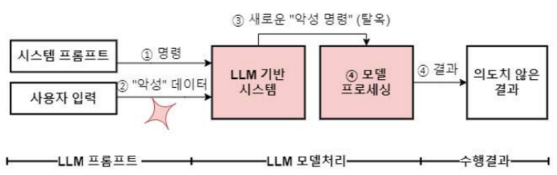
사이버 복원력 (Cyber Resilience) 교재 p.207
구성 참조모델 고려사항
부정적 영향에도 회복하는 역량
구분 내용 구성 비즈니스 영향분석, 보안정책통제, 테스트정책, 보안도구, 사이버복구계획 참조모델 가사요시아정 . 가시성, 사이버위생, 요구사항, 시험평가, 아키텍처, 정보공유고려사항 CMMI, CERT-RMM, CISA CRR도메인
공격 표면 관리 (ASM, Attack Surface Management) 교재 p.209
공격표면 유형 ASM 유형 관리방안
수집된 취약점 정보를 분석하여 사이버 자산의 공격 표면을 모니터링 및 관리하는 보안프로세스
구분 내용 공격표면 유형 외부, 내부, 동적 ASM 유형 사이버자산공격표면관리(CAASM), 외부공격표면관리(EASM), 디지털위험보호서비스(DRPS) 관리방안 발자보사감 . 발자국발견 → 자산재고분류 → 보안모니터링 → 사고모니터링 → 위험 감지 및 식별
CTEM (Continuous Threat Exposure Management) 교재 p.211
특 핵심절차 기술
보안 위협 식별, 측정 및 우선순위 지정/대응하는 위협관리 시스템.
구분 내용 특 가트너 2024 10대전략, 사이버 복원력 전략, ASM 활용 핵심절차 범탐우유동 . 범위지정 → 탐색 → 우선순위설정 → 유효성검증 → 동원 기술 (식별) ASM , 위협 인텔리전스 (위협관리) 취약점관리, 위협모델링
(대응/감시) SOAR , 지속적 보안모니터링, 가시성 (위협검증/전략수립) 취약점 검증, 위험기반 의사결정
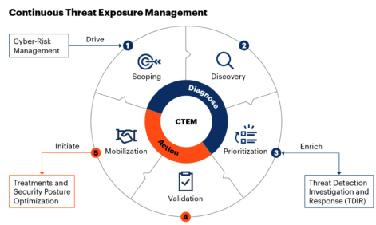
구성
국내 금융권 대상 사이버 보안위협에 대한 통합보안관제 체계 고도화 위한 공격표면관리.
구분 내용 구성 금융보안원 (보안관제 요원, ASM 시스템) → 취약자산 조치 권고 → 금융회사
랜섬웨어 다중 갈취 (Multi-Extortion) 교재 p.219
유형 대응 동향
랜섬웨어 공격자가 복수의 협박 수단을 결합하여 지불압력을 극대화하는 전술.
구분 내용 유형 Double Extortion (암호화, 탈취, 유출협박) Triple Extortion (+ DDoS, 평판위협) Quadruple Extortion (+ 공급망, 파트너, 규제기관 확장)대응 (예방) MFA , 최소권한 , 정기패치, 취약점 스캐닝, 3-2-1백업전략 , DLP솔루션 , EDR/XDR (사후대응) 사이버복원력 , DDoS방어, 공급망보안 , 지불거부, 전문가 협의, 법률자문 동향 이중갈취를 넘어 DDoS및 제3자 압박 전술 증가, AI활용 및 중소/중견기업 표적 증가.
주스 재킹(Juice Jacking), 초이스 재킹(Choice Jacking) 교재 p.221
주스재킹 초이스재킹 대응
구분 내용 주스재킹 공공장소 USB 포트 통해 악성코드 공격.초이스재킹 앱/웹 서비스의 설정 선택옵션을 강제로 활성화 , 취약상태 유도. 대응 (사용자) 공용USB 사용금지, 충전전용케이블, USB디버깅 비활성화, 권한차단 (기업) 충전인프라 관리, 정책규정, 사용자교육, 사고대응체계
IoT 보안인증 제도 (CIC, Certification of IoT Cybersecurity) 교재 p.225
AST (Application Security Testing) 교재 p.227
SAST (Static Application Security Test) 교재 p.228
도구 특징
화이트박스 보안테스트. 정적분석 .
구분 내용 도구 Snyk, SonarQube 특징 조기발견, 높은 ROI, 자동화, 외부 연동 테스트불가
DAST (Dynamic Application Security Test) 교재 p.229
도구 특징
블랙박스 , 외부 공격 시뮬레이션
구분 내용 도구 Sparrow, OWASP ZAP 특징 언어 독립성, 전체시스템평가, 코드 문제 탐지 한계
IAST (Interactive Application Security Testing) 교재 p.230
도구 특징
정적+동적
구분 내용 도구 Contrast Security, Seeker 특징 높은 정확도, 실시간탐지, DevOps친화적
SDP (Software Defined Perimeter) 교재 p.231
메커니즘 기술요소
사용자에 대한 세분화된 권한 부여와 인증 통해, 검증된 대상만 리소스에 접근하도록 설계된 아키텍처.
구분 내용 메커니즘 인증절차( 접속요청(OAuth) → 정보전달(SPA) → 접속허가(ZTA) ) 보안접속(IPSec → 허용자원 이용) 기술요소 (SDP Client ) PKI, SAML, Oauth , EDR/XDR (SDP Controller ) Zero Trust, RBAC/ABAC , IAM , MFA (SDP Gatewa y) IPSec , mTLS, SPA , Reverse Proxy
SPA : Single Packet Authorization. 인증된 요청만 GW 노출. 포트스캐닝 차단
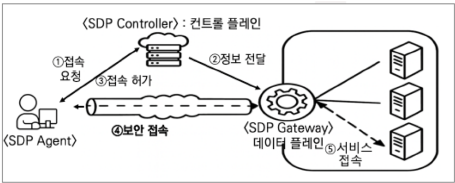
ABAC (Attribute-Based Access Control) 교재 p.233
특징 접근절차 구성
사용자, 자원, 환경 등 속성 기반으로 접근허용여부를 동적 판단하는 접근통제 모델.
구분 내용 특징 유연한 통제, 정책중심, SAST/DAST/IAST 복합활용. 제로트러스트 적합 접근절차 접근요청 → 정책/속성 검색 → 정책/속성확인 → 접근평가 → 결과집행 구성 (접근제어) 주체, 행동, 객체 (정책결정) PDP-결정, PEP-집행
(속성기반제어) PIP-정보제공 , 주체속성, 객체속성, 환경속성 (정책규칙) PAP-관리, PRP-검색
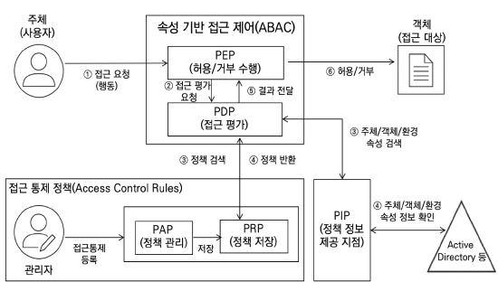
6. 인공지능 특 기능 보안위협 대응방안
다양한 LLM을 하나의 API로 호출할 수 있는 오픈소스 파이썬 라이브러리
구분 내용 특 연동 복잡성 제거, 개발 생산성, AI Gateway 기능 (핵심) API표준화, 요청 라우팅, 자동 fallback (운영) 비용추적, 비용통제, 로깅 (연계) 다양한 LLM 연동, 로드밸런싱, Failover 보안위협 LiteLLM 공급망 공격. 공개 저장소에 변조 버전 유포 대응방안 SBOM/AI-BOM, 최소권한, Egress 필터링, 보안점검/업데이트
러닝라이트 (Learnright) 교재 p.255
필요성
창작자가 저작물이 AI학습에 사용될 경우 거부하거나 보상을 요구할 수 있도록 지원하는 지적재산권
구분 내용 필요성 AI데이터 활용 급증, 기존 저작권 제도 한계, 창작자 보상/권리 확대
유형 기술
인공지능 기술 기반으로 운전자 개입 없이 차량을 운행하는 기술 체계
구분 내용 유형 규칙기반, 모듈형, End-to-End AI 기술 (센싱) 카메라, 라이다, 레이더, 초음파 (AI알고리즘) 인식, 센서퓨전, 위치추정, 예측, 경로제어
4대 자유 조건 필수 공개 항목 주요 모델
AI 데이터, 학습 가중치, SW 등 구성요소를 공개하여 누구나 사용, 연구, 수정할 수 있도록 허용한 AI시스템
구분 내용 4대 자유 조건 사용, 연구, 수정, 공유 필수 공개 항목 데이터 정보, 코드, 매개변수 주요 모델 Pythia, OLMo, Amber, T5
Model Openness Framework (MOF) 교재 p.260
등급체계 평가 구성요소
머신러닝 모델의 완전성과 개방성을 객관적으로 평가하고 분류하는 체계.
구분 내용 등급체계 (Class 1) Open Science (Class 2) Open Tooling (Class 3) Open Model 평가 구성요소 (코드) 평가코드, 전처리코드, 모델아키텍처, 라이브러리, 학습코드, 추론코드
(데이터) 데이터셋, 평가데이터, 샘플모델출력, 가중치, 파라미터, 메타데이터, 구성파일
(문서) 데이터카드, 연구논문, 평가결과, 모델카드, 기술보고서
하네스 엔지니어링 (Harness Engineering) 교재 p.262
핵심 역할 구성요소 설계전략
AI Agent 가 안전하고 안정적으로 작업을 수행하도록 감싸는, 스캐폴딩과 피드백 루프를 설계하는 기술.
구분 내용 핵심 역할 제어, 감시, 개선 구성요소 저장소, 샌드박스, 컨텍스트 관리, 서브에이전트(작업분리), 훅&백프레셔 설계전략 최소개입, 점진적공개, 빠른실패와 복구, 단순하게 시작, 삭제를위해 구축
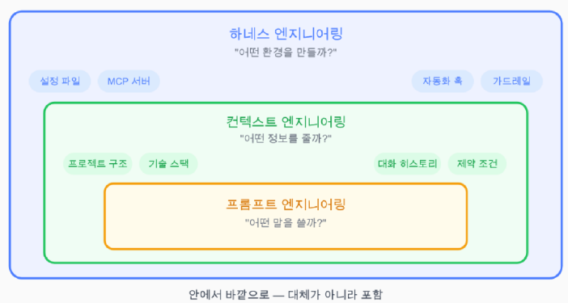
전방배치 엔지니어 (FDE, Forward Deployed Engineer) 교재 p.264
특 트랜스포머 문제점 구성요소 +a
선택적 상태공간모델(Selective SSM) 기반으로 긴 시퀀스를 효율적으로 처리하도록 설계된 시퀀스 모델
구분 내용 특 Selective SSM, Attention-Free, 선형 시간복잡도( O(n) ), 고정 크기 상태 트랜스포머 문제점 연산 복잡도, KV캐시 메모리 사용량, Decode 병목 구성요소 SSM 모듈, Selective Scan, MIMO 구조
+a 트랜스포머 대비 Retrieval 능력 낮음. 긴 문맥 빠른 처리에 강점 → Transformer+맘바 하이브리드 구조, 저사양 환경(엣지, 온디바이스)에서 맘바 활용
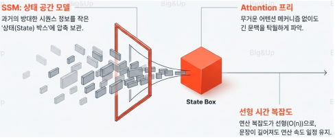
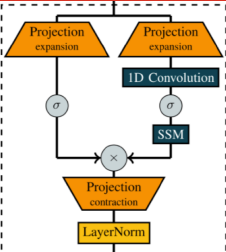
필요성 적용효과 핵심 압축 메커니즘 절차
벡터 양자화(VQ) 기반의 KV Cache 메모리 압축 기술
구분 내용 필요성 긴 컨텍스트 처리 한계, 동시 사용자 처리 제한, 추론속도 저하, 운영비용 증가 적용효과 KV 캐시를 정확도 손실 없이 3비트 압축, 메모리 소요 6배 감소, 어텐션 연산 8배 가속 핵심 압축 메커니즘 PolarQuant(정보압축) QJL(정확도 보정) 절차 입력벡터 수집 → 랜덤 회전 → 극좌표 변환(Polar Transform) → 스칼라 양자화 → 잔차 계산 → JL 변환 → 최종 압축표현 생성
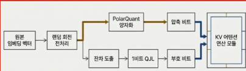
RLHF (Reinforcement Learning from Human Feedback) 교재 p.274
특 동작구조
인간 평가자가 모델 출력에 대해 피드백을 제공하고 강화학습에 반영하는 학습기술
구분 내용 특 인간기준 정렬, 안전성/윤리성 확보에 유리, 높은 비용 동작구조 인간 피드백 수집 → 보상모델 학습 → 강화학습으로 모델 최적화
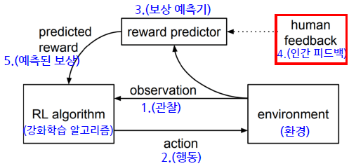
RLAIF (Reinforcement Learning from AI Feedback) 교재 p.275
특 한계 동작원리 원칙 설정내용
AI 모델이 다른 모델의 출력에 대해 자동 평가 및 피드백을 생성하고 강화학습에 활용하는 기술
구분 내용 특 자동화 기반 피드백 생성, 대규모 데이터 생성 가능, 비용 효율적, 확장성 한계 오류/편향 전파 위험, 인간 기준과 불일치 가능성 동작원리 원칙 설정 → AI 평가 생성 → 보상모델 구성 → 강화학습원칙 설정내용 (행동원칙) 안전성, 정확성, 유해성금지 (가이드라인) 답변스타일, 금지주제, 응답 톤 (평가기준) 정확성, 유용성, 무해성, 일관성
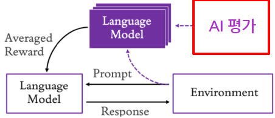
중첩학습 (NL, Nested Learning) 교재 p.277
특 핵심 메커니즘 구성 절차
기존 딥러닝의 망각 문제 극복 위해, 모델을 계층 구조 로 설계하여 서로 다른 속도로 지속 학습 을 수행하는 학습기술
구분 내용 특 망각 문제 극복, 장/단기기억 별 다른속도 처리, 장기기억 데이터 처리 개선 핵심 메커니즘 Uniform and Reusable Structure, Multi Time Scale Update 구성 외부 레벨(느리게) 내부 레벨(빠르게) → 각 레벨 별 Input, Gradient, 상태변화 개별 저장 → 시간 단위 정보 동시 기억 및 학습, 망각 최소화 절차 구조적 모듈화 → 데이터 지능 분류 → 가변 속도 업데이트 → 선택적 지식 통합
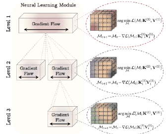
RX (Robot Transformation) 교재 p.281
로봇 파운데이션 모델(Robotic Foundation Model) 교재 p.282
HRI (Human-Robot Interaction) 교재 p.283
유형 구성요소
로봇과 인간의 상호작용 원리 및 기술, 설계 방법론을 연구하는 융합 분야.
구분 내용 유형 (상호작용) sHRI, pHRI, spHRI (제어구조) Tele-Operation , Supervisory Control, Shared Control, Full Autonomy 구성요소 입력, 인지, 처리, 의사결정, 출력, 물리 인터페이스, 통신, 안전/신뢰, 환경
HRC (Human-Robot Collaboration) 교재 p.284
기술
인간과 로봇이 동일 작업 공간에서 공동 목표를 수행하는 협력형 작업체계
구분 내용 기술 (센서) 자이로, 라이다, 토크 센서 (지능) AI, CV, 예측알고리즘 (시뮬레이션) 디지털트윈, CPS (안전제어) 충돌감지, 속도/힘 제한, 비상정지
특 절차 기술
모든 모달 데이터를 하나의 통합 모델에서 학습, 이해, 생성하는 AI 구조
구분 내용 특 단일 Transformer 기반 통합아키텍처, 공통 토큰화 구조 절차 공통 토큰화 → 공유 잠재공간 → 단일 Transformer 학습 → 멀티모달 생성 기술 (입력) 공통 토큰화 (잠재공간) 모달 정렬 (통합) 단일 Transformer 구조
(학습) Seq2Seq 통합학습 , 크로스모달 학습 (생성) 멀티모달 생성, 디퓨전 모델, VLM 기반 생성
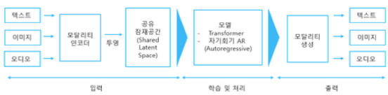
벡터데이터베이스(VectorDB) 교재 p.288
암기: 데이터 임베딩 특 구성 절차 구축 고려사항 현황 주기동
고차원 벡터 임베딩해 저장하여, 유사 벡터 빠르게 검색에 최적화된 DB
구분 내용 특 근사 최근접 이웃(ANN) , LLM, RAG활용구성 임베딩벡터 , 벡터인덱스 , 저장엔진, 유사도함수 , 메타데이터 저장소절차 데이터 임베딩 (BERT, CLIP, Ada, Wav2Vec ) → 벡터 저장
→ 인덱싱 (ANN : HNSW, IVF, PQ, ScaNN, ANNOY, KD-Tree, LSH ) → 쿼리임베딩 → 유사도계산 → 결과반환 구축 고려사항 성능, 내결함성, 모니터링, 액세스제어, 확장성, 다중사용자 및 격리, 백업, API 및 SDK 지원 현황 ETRI 공공데이터셋 벡터화 및 AI검색엔진 연구 중. 차분 프라이버시, 난독화 기술이 Vector DB에 도입됨.
주기동 한국형 LLM 경쟁력 확보 방안 : 벡터DB 도메인 특화 벡터 데이터셋 구축, 처리기술, 확장성 제약 해결
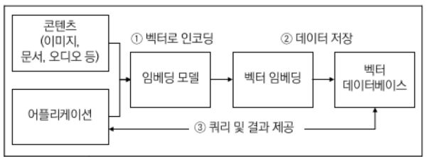
📂 하위 토픽 (6) 접기/펼치기 근사 최근접 이웃 검색(ANN) 교재 p.289
특 절차
입력 벡터와 유사한 이웃을 빠르게 찾는 근사 검색기법
구분 내용 특 KNN대비 효율적, 고속 절차 벡터임베딩(BERT, CLIP, Ada, Wav2Vec) → 벡터인덱싱 → 쿼리입력 및 탐색 → 근사 최근접이웃 반환 (Cosine, L2 등 Top-k) → 후처리
특 구성 수행절차
고차원 벡터 공간을 계층적 그래프로 구성 하여 상위 레이어에서 하위 레이어로 탐색을 수행하는 ANN 알고리즘
구분 내용 특 O( log N ) 탐색속도, 다계층 그래프 구조 구성 Node, Edge, Entry Point, Heuristic Selector, efSearch 수행절차 계층 할당 → 노드 연결 → 진입 및 하강 → 고속 이동(Greedy Search) → 후보군 관리(efSearch) → 최종 선별
특 구성 수행절차
전체 벡터 공간을 클러스터링 한 뒤, 쿼리 벡터와 인접한 셀만 한정하여 스캔하는 ANN 알고리즘
구분 내용 특 O(K + nprove/K * N) 탐색속도, 역색인 구조 구성 Centroid, Inverted List, Quantizer, Cluster, nprobe 수행절차 데이터 클러스터링(K-means) → 중심점 확정 → 데이터 매칭 → 역색인 생성(Inverted List) → 후보군 관리 → 부분거리 계산(Brute-force)
특 구성 수행절차
서브 벡터로 분할하고, 코드북 을 생성하여 압축된 인덱스 간 거리를 룩업 테이블로 계산하는 알고리즘
구분 내용 특 O(N*M) 탐색속도, Quantization, Product 구조 구성 Sub-space, Centroid, Codebook , Code, 룩업 테이블(LUT) 수행절차 차원 분할 → 코드북 학습 → 양자화 → 인덱스 변환 → 룩업테이블 생성 → 누적 합산
특 구성 수행절차
오차를 최소화하는 방향으로 양자화하여 MIPS 탐색 효율을 극대화한 ANN 알고리즘
구분 내용 특 O(N*M) 탐색속도, AVQ구조 구성 AVQ , Partitioning based Search, Int8 Quantization, SIMD, Maximum Inner Product Search(MIPS)수행절차 전역 클러스터링(IVF) → 데이터 샘플링 → 양자화 학습 → 고속 스코어링 → 정밀 재정렬
특 구성 수행절차
벡터 공간을 다수의 랜덤 하이퍼플레인으로 반복 분할한 랜덤 이진 트리 집합을 이용한 ANN 알고리즘
구분 내용 특 O(L * log N) 탐색속도, Random Projection Tree 구조 구성 Forest of Trees, 코사인/유클리드 거리, Static Memory Mapping, Parameter Tuning, Random Projection Tree 수행절차 랜덤 평면 분할 → 재귀적 이진 분할 → 다중 트리 생성 → 인덱스 빌드 → 우선순위 탐색 → 중복제거 및 정렬
특 알고리즘
초기 검색 결과를 다시 평가하여 정확한 순서로 재정렬하는 알고리즘.
구분 내용 특 2단계 후처리 기술, 관련성 기준 재정렬 알고리즘 Cross-Encoder , MonoBERT, Bi-Encoder , ColBERT , MART , GBRank, RankNet, LambdaRank , ListNet, ListMLE, LambdaMART
📂 하위 토픽 (10) 접기/펼치기 유형 기술 주기동 주기동 주기동
인간과 유사한 외형을 갖추고 상호작용이 가능한 로봇
구분 내용 유형 (외형) 완전, 부분, 기능 (기능) 산업,의료,연구 (이동방식) 이족보행,바퀴,혼합 (기타) 감정소통 기술 (센싱) 카메라, 센서 (멀티모달 입력) CNN, ViT, Computer Vision, VLM, VLA (AI/ML) AI반도체 , 시스템 SW, app SW, LLM , 엣지AI, 온디바이스AI , 연합학습)
(엑추에이터) 서보시스템, 모터, 감속기, 제어기 (바디) 금속합금, 카본파이버, 배터리 주기동 인간-로봇 상호작용( HRI : Human-Robot Interaction) 기술분류 : pHRI(물리접촉) sHRI(사회적 교류) spHRI(통합) Teleoperation(원격)
주기동 인간-로봇 협동( HRC : Human-Robot Collaboration) HRI 통해 HRC 감정소통/교감 구현 기대
주기동 감정/정서 이해형 로봇으로 확장 전망, 및 물리적 상호작용하며 Physical AI 진화 방향 위한 기술 결합 필요.
BCI (Brain-Computer Interface) 교재 p.305
유형 신호처리 절차 기술요소 현황
뇌에서 발생하는 전기적/신경학적 신호를 컴퓨터가 해석해 기계나 SW를 제어하는 기술.
구분 내용 유형 침습형, 비침습형 신호처리 절차 신호 수집 → 전처리 → 특징추출 → 분류 → 응용PGM 인터페이스 → 응용PGM 조작 기술요소 (뇌신호 측정) EEG, ECoG, fMRI, MEG (신호처리) 패턴인식, 특징추출, 실시간처리, 디코딩
(인터페이스) 전극, 칩셋 임플란트, AR/VR) (BCI신호) Motor Imagery, SSVEP, SCP
현황 과기정통부, 2026 뇌 미래산업 국가 R&D 전략 발표 → 7대 국민 체감 프로젝트(사지마비, 정신치료, 감각복원, 인공신체, 외골격장치, 초실감 엔터테인먼트, 드론/로봇제어)
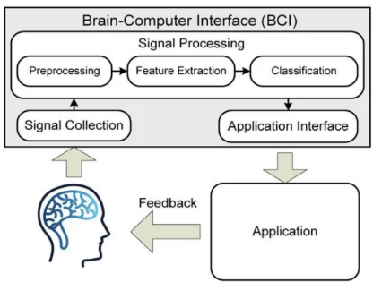
AI OS(Artificial Intelligence Operating System) 교재 p.308
특 구성요소
LLM을 운영체제의 두뇌로 삼아, 지능형 에이전트로서의 기능을 내장한 운영체제.
구분 내용 특 LLM 요청단위 자원 스케줄링, 스냅샷/복원 제공 문맥교환, 리소스 최적화 구성요소 (LLM ) LLM Core, LLM Scheduler (Data manager ) Context, Memory, Storage Manager (Tool manager ) Tool, Access Manager
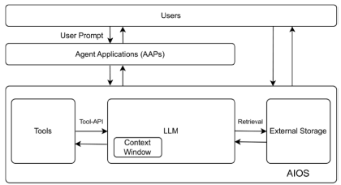
AI 웹 브라우저 (Artificial Intelligence Web Browser) 교재 p.310
특징 기술요소
AI 기술 기반으로 사용자에게 개인화되고 자동화된 지능형 웹 탐색을 제공하는 차세대 브라우저
구분 내용 특징 AI비서 내장, 개인화, 콘텐츠 요약, 작업자동화 기술요소 (인공지능) LLM, NLP, Edge AI (인식) Context 인식, Agent Mode, 컨텐츠분석/요약 (OS운영) 개인화, WebGPU, 스킬시스템, 해드리스 브라우저
월드모델(WorldDModel) 교재 p.313
구성
현실 세계의 물리법칙, 공간, 상호작용까지 이해 및 시뮬레이션하는 인공지능 모델
구분 내용 구성 인지, 전이, 메모리, 롤아웃, 시뮬레이터, 플래너
VLM (Vision-Language Models, 시각언어모델) 교재 p.314
특 기술 대표모델 +a
시각정보와 언어정보를 동시에 처리 및 이해하는 멀티모달AI 모델
구분 내용 특 상호이해, 대규모 학습, 범용성, 확장성 기술 (이미지) CNN, ViT (텍스트인코더) Transformer, LLM (공통 임베딩공간) Shared Embedding Space, 멀티모달 임베딩 (멀티모달 학습) Constrative Learning , PrefixLM, Cross Attention , MLM 대표모델 CLIP, Kosmos-1, Flamingo, LLaVA +a : VLM(시각, 언어) → VLA(시각, 언어, 행동) 으로 발전. : 이미지, 텍스트 이해 후 물리 행동까지 생성하는 인공지능 모델 → 로봇제어, 자율시스템, 물리AI에 활용
📂 하위 토픽 (5) 접기/펼치기 MCP (Model Context Protocol) 교재 p.317
특 구성 수행절차 보안취약점 및 대응
AI모델이 외부 시스템,도구와 상호작용 위한 개방형 통신 프로토콜
구분 내용 특 개방형 표준, 양방향, Context-Aware, Agent-Ready, 플러그인기반, JSON-RPC통신 구성 통신주체(MCP Host, MCP Server, MCP Client ) AI시스템(LLM, Context Provider) 외부(FileSystem, DB, Web) 연동(MCP Bridge , Plugin, Tools) 수행절차 연결설정 → 컨텍스트교환 → 도구호출 → 결과처리 보안취약점 및 대응 (인증보안) mTLS, OIDC, TLS1.2+ (공급망) SBOM, 서명, SCA스캔 (권한) Egress정책, 화이트리스트, 링크차단 (인젝션) 프롬프트 필터링, HITL 승인, 샌드박스 실행
(데이터) DLP, 송수신 암호화, 주기적 삭제 (모니터링) 구조화 로그, SIEM연계 (멀티테넌시) 네임스페이스 격리, 컨테이너 정책 적용
A2A (Agent2Agent) 교재 p.319
암기: 발작처추완푸 특 설계원칙 절차 핵심 +a
AI Agent 간 통신 및 협업을 위한 표준 프로토콜
구분 내용 특 양방향 유기적 협업, 상호운용성, 표준화, 보안중심설계, 멀티모달, 오픈소스 표준 설계원칙 에이전트 능력 수용, 표준기반, 보안, 장기실행작업지원, 모달리티 독립 절차 발작처추완푸. 발견 → 작업요청 → 처리 → 추가입력 → 완료 → 푸시알림핵심 (메타정보) Agent Card, Agent Discovery (통신주체) A2A 서버, 클라 (작업) Task, Task L/C (메시지) Message, part, Artifact (네트워크) HTTP+JSON RPC , Event Streaming +a 에이전트 AI 간 데이터 교환 시 보안성 확보 방안 → 완전동형암호 (CKKS 알고리즘) → 유출위험 최소화, 규제대응, 신뢰성확보, 데이터활용
AP2 (Agent Payments Protocol) 교재 p.324
특징 통신절차 구성요소 기술요소
AI에이전트가 사용자 대신 결제 를 수행할 수 있도록 설계된 개방형 결제 프로토콜
구분 내용 특징 다양한 결제수단, A2A와 MCP확장 통신절차 사용자 권한부여(Intent mandate) → 상품탐색, 장바구니구성(Cart mandate) → 결제실행(Payment mandate) → 결제처리/검증 구성요소 (Mandates) Intent, Cart, Payment (검증요소) VCS, 전자서명 (x402확장) 스테이블코인) 기술요소 SSL/TLS, 전자서명, A2A , MCP , 오픈소스 생태계, DID , 스마트 컨트랙트 , VDC , 신뢰앵커
ACP (Agent Communication Protocol) 교재 p.326
특 기술요소
REST 기반 AI에이전트 간 메시지 인터페이스 표준 통신 프로토콜
구분 내용 특 비동기 우선, SDK 불필요, REST 기반 기술요소 (통신) JSON , REST , gRPC , Stateless, Agent Discovery (보안) Oauth , JWT , Checksum, 경량 암호화 (NW제어) QoS제어 , 멀티모달, Plugin, 분산처리, 제약조건 협상
ANP (Agent Network Protocol) 교재 p.329
특 레이어 별 구성요소
AI 에이전트들이 협업하고 외부 시스템과 통신하기 위한 표준 네트워크 프로토콜.
구분 내용 특 분산형 신원인증(W3C DID) 암호통신 채널, 동적 프로토콜 협상레이어 별 구성요소 (Application Protocol) Agent Discription , Agent Discovery , Agent Protocol Manager
(Meta-Protocol) Protocol 협상, 디버깅, 테스팅
(Identuty Layer) Agent Identity, E2E, W3C DID
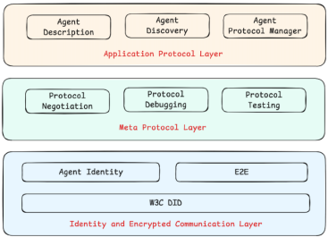
기술 도입 고려사항
AI기술을 활용하여 IT운영 데이터 분석과 프로세스를 자동화하고 최적화하는 운영 자동화 기술.
구분 내용 기술 (AI) 이상탐지, 상관관계분석, 원인분석, 예측분석 (빅데이터) 데이터 수집, 통합, 정제 (자동화) 워크플로우 자동화, 자동 대응, Self Healing
(NLP) 로그 분석, 챗봇-가상 어시스턴트 (시각화) 대시보드, 모니터링 도입 고려사항 데이터 품질, 데이터 통합, 인프라 연계구조, 목표설정, 보안정책 및 컴플라이언스 준수
특 구축목적 구성 +a
AI에이전트의 수명주기 관리에 초점을 맞춘 개발 및 운영 패러다임.
구분 내용 특 End-to-End 플랫폼. 자율적인 문제해결, 자연어 상호작용, 사전예방 구축목적 안정적 에이전트 구축/평가, 에이전트 의사결정 가시성, 상시 모니터링, 디버깅 지원, 거버넌스 구성 (구축/평가) 프로토타입, 테스트, 피드백 (관찰가능성) 세션 리플레이, 대시보드, 이상감지 (디버깅) 세션비교, 버전관리
(자원관리) 토큰추적, Api분석 (거버넌스) 접근제어, 가드레일모니터링
+a AgentOps 와 AIOps 통합 통한 시스템 자동화 개선전략 → (AIOps) 이상징후탐지, 행동추적 → (AgentOps) 행동패턴/영향분석 → "상관관계분석, 프롬프트 업데이트, 환각 차단"
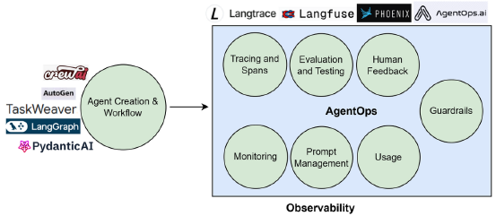
📂 하위 토픽 (3) 접기/펼치기 SEO (Search Engine Optimization) 교재 p.333
특징 기술요소
검색엔진에서 검색결과 상위에 노출 되도록 만드는 전략
구분 내용 특징 자연어 검색 트래픽 중심, 사용자 중심, 다차원 접근 기술요소 (사이트 최적화) CDN, Cache (보안) HTTPS, SSL/TLS (TAG) Title, Meta, H1헤딩, ALT태크 (크롤링) Robots.txt, Canonical 태그, Noindex 태크 (멀티미디어) Alt 속성, WebP포맷, 자막
AEO (Answer Engine Optimization) 교재 p.334
특 기술요소
생성형 AI답변 본문에 직접 포함 할 컨텐츠를 최적화하는 전략.
구분 내용 특 질문,답변 정렬, 신뢰도 증명 , 응답 효율기술요소 (데이터신뢰) 출처표기 , EEAT강화 (구조화) QAPage, FAQPage, HowTo, Article, Organization, Author, Citation (평가/피드백) AEO KPI, 개인정보최소화
(논리적 진행) 정의-핵심-근거-예시-다음-결론
GEO (Generative Engine Optimization) 교재 p.335
특 기술요소
생성형 AI검색엔진에서 답변에 활용되도록 최적화 하는 전략
구분 내용 특 AI중심 최적화, 제로클릭 대응 , EEAT 신뢰성 기술요소 콘텐츠 청킹, 임베딩 최적화, RAG대응, 지식그래프, EEAT충족, 멀티모달, Semantic Optimization
특 구성 표현체계 활용사례 주기동
현실 개체와 관계를 그래프 형태로 표현의미 기반 데이터 구조
구분 내용 특 의미기반, 연결성, 확장성 구성 노드, 엣지, 속성 표현체계 온톨로지 , RDF, SPARQL, 트리플 저장소, 그래프DB , 추론엔진, 엔티티 정규화활용사례 RAG, GNN, 검색엔진, 추천시스템, AI/NLP, LLM환각현상 감소 주기동 LLM 확률적 생성, 근거판단 어려움 → LLM 과 지식그래프 결합 → 고신뢰, 설명가능성, 사실기반AI 구현. (DSLM 도메인 특화 모델 구현 시 핵심)
PEFT (Parameter-Efficient Fine-Tuning) 교재 p.338
특 메커니즘 기법 +a
일부 파라미터만 효율적으로 학습하여 계산량과 모델 크기를 줄이는 파인튜닝 기법.
구분 내용 특 일부 파라미터 조정, 계산비용 절감, Full-Finetuning 수준 성능 유지, 저사양 시스템 효율적 메커니즘 사전학습 모델선정 → 모델 Freeze → 조정파라미터 설계 → 선택파라미터 학습 → 검증 및 배포 기법 Prompt Tuning (표현제어) Prefix Tuning (벡터삽입) Adapters (학습모듈삽입) LoRA (저랭크 행렬) QLoRA (양자화) QALoRA (저비트 정량화) ReLoRA (반복적)+a 기법 선택기준 → (리소스 제약수준) Prefix, LoRA, QLoRA (요구성능수준) LoRA, ReLoRA, Adapters (적용유연성) Prompt, Adapters
📂 하위 토픽 (1) 접기/펼치기 LoRA (Low-Rank Adaptation) 교재 p.339
수행절차 기술
낮은 랭크의 행렬로 근사하여 Fine Tuning 을 수행하는 PEFT 기법.
구분 내용 수행절차 사전학습모델 선정 → 원본 가중치(W) 동결 → LoRA 행렬(A, B) 삽입 → 하이퍼파라미터 설정(rank, alpha, dropout) → 학습 기술 Low-Rank 근사화 , W+BA (W동결 + BA보조학습) 체크포인트 경량화
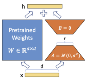
액티브러닝 (Active learning) 교재 p.341
절차 쿼리 전략
머신러닝 모델이 학습 과정에서 유의미한 데이터를 능동적으로 선택 하여 학습하는 방법.
구분 내용 절차 데이터수집 → 데이터셋 분할(seed, 비라벨 데이터) → 모델학습 → 데이터선택( Query Strategy, Oracle Labeling) → 중단기준마련 쿼리 전략 Uncertainly Sampling (모호 샘플 우선), Query By Committee (앙상블 기반), Expected Model Change (파라미터 변화량 기준 선택)
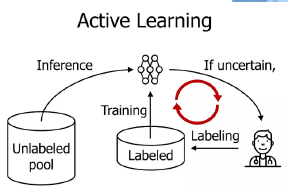
자기지도 학습 (Self-Supervised Learning) 교재 p.343
절차 주요기법
라벨이 없는 데이터에서 스스로 라벨을 만들어 학습하는 방식
구분 내용 절차 사전과제 정의 → 자기생성 라벨 구성 → 모델입력 및 학습 → 표현 학습 → 다운스트림 활용 주요기법 Context 예측, 대조학습 (SimCL R, MoCo, BYOL, CL IP), 생성기반(AE, VAE, MAE ) , 클러스터링, 예측 부호화, 변형 예측
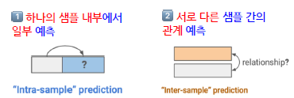
머신 언러닝 (Machine Unlearning) 교재 p.346
필요성 절차 기법 평가지표
특정 데이터에 기반한 영향만을 제거, 모델 성능에 반영되지 않게하는 기술
구분 내용 필요성 잊힐권리, 개인정보보호, 규제준수, 모델효율성, 경량화, 파라미터 편집 절차 잔존/삭제 데이터 분류 → 삭제 데이터 영향 식별 → 영향 제거 → 갱신된 모델 생성 → 재학습 모델과 비교 기법 SISA (샤드분리) Fine-Tuning (삭제대상제외), Gradient Reversal (역방향 업데이트) Influence Function (영향조정) Certified Data Removal (삭제증명) Approximate Unlearning (근사삭제)
Extract Unlearning (삭제대상 제외 학습) DaRE Forests (일부 트리) Anti-Sample Generation (반대 노이즈 샘플) Split Unlearning (서브모델)평가지표 (삭제효과성) Forgetting Accuracy, 멤버십 추론공격 , 잔여정보량 (성능유지성) 모델정확도, 전후성능차이 (효율성) 삭제소요시간, 연산량 (망각지표) ZRF Score, Anamnesis Index
절차 플랫폼구조 기술 보안취약점 주기동 현황
자연어로 기능을 설명하면 개발과정 전반을 AI가 주도하고, 사람이 검토하는 개발패러다임
구분 내용 절차 문제정의 → 코드생성 → 테스트 → 배포 플랫폼구조 (입력) 사용자 자연어, 아이디어 디자인 (코드 프롬프팅) 코드작성, 설명, PL변환, 디버깅/리뷰
(도구) 코딩, UI/UX, 생산성, 협업 (AI모델) LLM, Agent (출력) 코드, 서비스 결과 기술 (AI) LLM , 도메인특화모델 (개발) 코드어시스턴트, 테스트자동화 (운영) DevOps, CI/CD
(데이터) DataLake/LakeHouse, 지식그래프, 벡터DB (확장기술) 에이전트 F/W 보안취약점 AI기술부채 , 미검증 코드 AI의 실행, 통제 이탈, 악성 기능 포함, 취약한 의존성 포함 , 간접 프롬프트 인젝션 노출, 목적 분실주기동 개발자의 AI기반 SDLC 사이클 주도 방안. 개발자는 코드생성 AI 오케스트레이터로 역할 전환 필요.
현황 AI생성 코드의 내부 로직 이해 부족 문제, 생성과정 블랙박스화 → 에이전틱 개발 전환, SW개발 전 과정에 인공지능 관여 확대 전망
에이전트 군집(Swarm) 코딩 교재 p.354
특 구성 기술
여러 자율적인 AI에이전트가 협력, 소프트웨어 개발 프로젝트 수행 방법론.
구분 내용 특 자율성, 컨텍스트 이해, 분산제어, 협업 구성 에이전트, Hand-off(권한위임) 통신메커니즘(메시지큐, API) Coordination(행동, 작업할당) 환경(코드베이스, Git, IDE) 기술 (멀티에이전트F/W) AutoGen, LangChain, OpenGPTs (지식베이스) VectorDB, RAG (LLM) ChatGPT, Claude (버전관리) Git, Github, GitLab
RAG as a Service (RAGaaS) 교재 p.356
특 기술
클라우드 기반 플랫폼 통해 RAG 기술을 제공하는 서비스 모델.
구분 내용 특 완전관리형, 최신정보 , 높은 정확성, 출처 추적 기술 (데이터처리) 청킹 , 임베딩, 벡터DB (검색) HNSW, IVF, 유사도검색 (생성형AI) LLM, 프롬프트엔지니어링 (운영관리) API통합 I/F, Scale out/up , 모니터링 (보안)
Agentic RAG (Agentic Retrieval-Augmented Generation) 교재 p.357
기존 RAG한계 특 구성
RAG 파이프라인에 에이전트를 통합 해, 스스로 검색전략을 계획하고 개선 하는 자율형 AI시스템.
구분 내용 기존 RAG한계 단일 외부지식 소스, 원샷 검색구조 특 반복검색-생성 루프 , 계층적 Agent , 정책 최적화, 토큰 효율화, 자기 피드백 메커니즘 (스코어 기반), 다중 에이전트 협업 구성 (Agent Layer) Retrieval Router Agent, Retrieval Agent X/Y/Z, Tool Agent (RAG Core Layer) Retriever, Re-Ranker, LLM, Vector DB (Evaluator) Self-Evaluator, External Evaluator
LangGraph : 에이전트 오케스트레이션. 구성(노드/엣지/상태관리) 특징(내구성, 인간개입 , 종합메모리, LangSmitch 디버깅, 프로덕션 배포)
LlamaIndex : 다양항 데이터소스를 LLM과 통합. 핵심( 데이터 커넥터, 데이터 인덱스 , 쿼리엔진, 챗 엔진, 에이전트) 인덱스(리스트, 벡터, 트리, 키워드, 지식그래프)
HayStack : LLM 과 RAG 파이프라인 연결, 오픈소스 AI 오케스트레이션. 구성(Component, Generators, Retrievers, Document Stores, Data Classes, Pipelines)
RagFlow : 최신 RAG 와 에이전트 결합, 답변 정확성/신뢰성 향상 오픈소스 RAG 엔진.
Hugging Face : 인공지능 작업도구, 머신러닝 모델 제공 플랫폼. 구성(Model Hub, Transformers Library , Datasets Hub, Pipeline, Inference API, Huggingface Spaces)
Unsloth : 독자적 Tritin 커널과 알고리즘. LLM 파인튜닝 및 강화학습 오픈소스 FW. 기술( 지능형 가중치 상향, 수동 그래디언트, Triton 커널 , Xformers)
InstructLab : 개방형 기여를 통해 범용 모델링을 촉진하는 오픈소스 AI프로젝트. 기술(데이터 큐레이션, 대규모 합성데이터, 다단계 튜닝FW)
특징 절차 시나리오
인공지능 시스템에 대해 의도적 공격 및 취약성 검증을 수행하는 전문 팀.
구분 내용 특징 공격 시뮬레이션 , 실전환경 테스트, 취약점 발견절차 목표정의 → 공격벡터 선정 → 시나리오/테스트셋 구축 → 테스트 실행 → 재검증 시나리오 공격자관점, 적대적테스트, AI시뮬레이션, 지속개선
특징 절차 테스트(공격) 기법 현황
AI시스템 잠재 위험을 식별하기 위한 모의공격 프로세스.
구분 내용 특징 공격자 관점 시뮬레이션. 절차 목표정의 → 위협 모델링 → 시나리오 설계 → 공격 실행 → 결과 추적 보고 → 완화/개선 테스트(공격) 기법 (입력조작) 프롬프트 인젝션, 탈옥, 모델회피 (데이터) 포이즈닝, 모델추출 , 민감정보추출 (시스템통합) 과대권한/위임, 편향 현황 ISO/IEC 42119-7 : AI레드팀 테스트에 대한 국제 공통 표준. ETRI에서 에디터 역할로 국제 공통 시험 절차 방법 구축 중.
ISO/IEC AWI TS 42119-7 교재 p.368
딥페이크 탐지 부문 7대 혁신 기술 현황 교재 p.369
기술
구분 내용 기술 자가학습, 블록체인 인증, 실시간 라이브 탐지, 멀티모달 분석, 온디바이스 AI, 법의학적 픽셀 분석, 적응형 학습
가디언 에이전트 (Guardian Agent) 교재 p.374
필요성 모니터링대상 역할 통제대상
AI 시스템 안전성, 신뢰성, 윤리성 확보 위한 감독제어 AI시스템
구분 내용 필요성 보안/윤리, 안정성, 투명성, 정책준수 모니터링대상 입력/출력 데이터, 의사결정과정 , 상황환경, 상황인지, 로그감사기록역할 패턴분석, 신뢰도분석, 설명가능성, 정책기반제어 통제대상 행동중단 , 행동변경, 자동복구, 모델업데이트
추진내용
AI 컴퓨팅 인프라 및 인재양성, 보안성을 확보하기 위한 국가 AI 전략.
구분 내용 추진내용 (인프라) 핵심 AI컴퓨팅 인프라, AI데이터센터 생태계, AI 서비스 기반 고도화
(데이터) 국가 데이터 통합플랫폼 구축, AI데이터 공유 생태계, 보건의료 AI데이터 확충
(생태계) 국가 과학 AI 통합 플랫폼, 국가 AI 데이터 거버넌스
(보안) AI보안 생태계 활성화(CVD/VDP), AI 사이버 보안 체계 구축, AI안보 대응 강화
독자 AI 파운데이션 모델(범용) 교재 p.379
독자AI파운데이션모델 현황
구분 내용 독자AI파운데이션모델 배경(AI기술주권, 기술종속 탈피) 추진방안(범용모델개발. GPU 1000장, 정예팀(네이버, 업스테이지, SKT, NC AI, LG AI연구원)) 현황 글로벌 선도 모델 95%수준 달성, 2000억원 규모 지원, 5000억개 파라미터 초대규모AI모델 개발 착수, 오픈소스 활성화, AI특화 모델 병행
AI특화 파운데이션 현황 현황
구분 내용 AI특화 파운데이션 배경(특정분야특화, 데이터 희소성 해소, 실제 현장적용) 추진방안(GPU 256장, 대학주관, 범용FM 추가학습 전환) 현황 컨소시엄 (루닛, KAIST), 의과학, 단백질 구조 예측 생명과학 기초 모델
현황 과기정통부 AI특화 파운데이션모델 3대 지향점 : 독자 모델 개발 GPU공급, 오픈소스화 통한 생태계확장, 산학연 역량 레벨업
모두를 위한 인공지능(AI) 인재양성 방안 교재 p.382
CPMAI (Cognitive Project Management for AI) 교재 p.384
필요성 6단계 절차
PMI(Project Mgmt Institute) 프레임워크 기반 AI프로젝트 관리 전문 방법론.
구분 내용 필요성 AI프로젝트 불확실성, PMBOK+CRISP-DM 통합분석 6단계 절차 비즈니스이해 → 데이터이해 → 데이터준비 → 모델개발 → 모델평가 → 운영모니터링
사용량 기반 종량제 인공지능 서비스 교재 p.385
구성 기술요소 프로세스
인간 연구자를 보조하거나 대체해 논문 작성까지 수행하는 자율 연구형 인공지능 시스템.
구분 내용 구성 LLM기반 지식엔진, AI실험 디자이너, AI해석자, AI저자 기술요소 LLM, 지식그래프, 멀티모달AI, 자동화된 과학탐구, 강화학습, 에이전트 협업 시스템 프로세스 아이디어생성 (LLM Ide, Novelty Check, Idea Scoring) → 실험반복 (Code Update, Experiment Execution, Numerical Data) → 논문작성 (Menuscript Template, LLM Paper Review)
소버린 AI (Sovereign AI) 교재 p.389
구성 정책 로드맵 구축절차 기술요소 현황 동향
국가/지역 AI모델 독립적 통제운영 AI주권 확보전략
구분 내용 구성 자국 데이터주권 , AI모델개발역량, AI인프라, 기술확보 정책 국산LLM개발, 국산AI인프라, AI윤리, 오픈소스 로드맵 (1단계) 데이터보호관리, 암호화키 도입 → (2단계) 지역적 데이터보호, 자국기업 운영 → (3단계) 주체적 관리, 기술자주성 확보 구축절차 ((사전준비)) (주권정책) 규정 평가, 요구정의 (전략수립) 전송범위, 거버넌스, 보안전략 (주권확보준비) 정책 벤치마킹, 데이터분류, PoC
((구현)) (주권아키텍처) 인프라/통신, 정책 배포, 소버린 랜딩존 배포 (데이터통제) 기밀컴퓨팅, E2E 암호화
((운영)) (주권관리) 관측가능성, 데이터주권 운영화, DevOps 단일화 (생태계 최적화) 컴플라이언스, 사이버보안 평가 기술요소 소버린클라우드, 로컬데이터허브, 자국어LLM, 국산 AI반도체/클라우드, 국산FW, 다국어, XAI, AI감사, 모델경량화, 저전력추론, 공개모델, 공동개발
현황 ETRI 소버린 AI 3단계 : 데이터 소버린, 모델 소버린, AI기술 소버린 동향 한국(K-AI 파운데이션, 하이퍼클로바X) 중국(키미), 싱가포르(SeaLion AI)
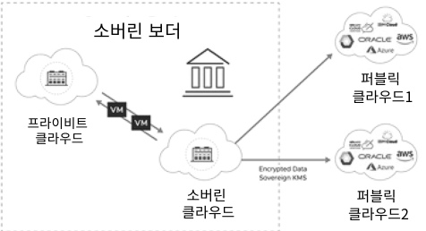
필요성 기술
데이터가 생성되는 디바이스 또는 인근 엣지에서 AI모델을 직접 실행하여 분석처리하는 기술
구분 내용 필요성 지연최소화, 프라이버시, 비용절감, 클라우드 의존 감소 기술 HW (GPU, NPU, TPU, FPGA) 모델최적화 (경량화, 양자화, 지식증류, 프루닝) 엣지인프라 (MEC분산처리 , 온디바이스AI, 연합학습 )
추론최적화 (추론엔진 최적화, 연산병렬화) 보안 (차등pv, TPM, TRM)
양자 AI (Quantum AI) 교재 p.395
특 한계 기술 현황 주기동 주기동
양자기술을 AI알고리즘에 적용, 성능 극대화하는 기술
구분 내용 특 양자 중첩,얽힘,불확정성 특성 기반, 고속 병렬연산 한계 양자HW 개발 미흡, 오류율, 디코히런스 문제 기술 QML, 최적화(QAOA , VQE ) QNLP, 양자이미지(FRQI, NEQR) 현황 오류/디코히런스 해결방안 : 양자 오류정정(QEC), 동적 디커플링, 양자 결함 내성(Fault-Tolerant Quantum Computing, FTQC)
주기동 본질적 취약점 - 결맺음 깨짐(Decoherence) : 노이즈로 인해 고유 특성 파괴 → 양자 오류 정정(QEC) : 쇼어9큐빗부호, 스테인7큐빗부호, 표면부호, 양자 저밀도 패리티 검사
주기동 (해결) 내결함성 양자 컴퓨팅(FTQC) : 물리적 오류가 논리적 수준에서 치명적 오류로 증폭됨을 방지, 신뢰성 있는 계산 수행.
양자 머신러닝 (QML, Quantum Machine Learning) 교재 p.396
특 알고리즘 절차
양자컴퓨팅의 원리(중첩, 얽힘, 간섭)을 활용하여 머신러닝 알고리즘을 고도화하는 기술.
구분 내용 특 고차원, 추론가속 알고리즘 (머신러닝) QSVM, Q-means, Q-PCA, Q-kNN (강화학습) Q-Q Learning, Q-Policy, Q-DQN (최적화) VQE, QAOA 절차 큐비트 변환(인코딩) → 양자회로설계(PQC) → 하이브리드 학습 → 패턴추출(샘플링) → 오류보정 → 실행환경(스택)